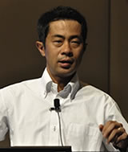

アクセシビリティとは
情報のバリアフリー。利用する全ての人が、心身の機能や利用する環境に関係なく、提供されている情報やサービスを利用できること

セミナー・対談
動画をアクセシブル＆マシンリーダブルにする方法
株式会社インフォアクシア 代表取締役 植木 真氏
2015年2月3日火曜日 16時00分から16時50分

講師プロフィール
WebサイトおよびWebアプリケーションのアクセシビリティ確保をコンサルティング。国内外のアクセシビリティ・ガイドライン策定にも従事。現在はWAIC（ウェブアクセシビリティ基盤委員会）の委員長を務めている。
セミナー概要
YouTubeなどを使って動画を配信することは、ごく当たり前のことになってきました。その動画のコンテンツをマシンリーダブルにできる方法があるって、皆さんご存知でしたか？ それは、動画コンテンツにキャプションを提供することです。しかも、思っているよりも意外とカンタンにできてしまうのです。
このセミナーでは、動画にキャプションを提供するメリットは何か、キャプションはどのように作成すればよいのかをはじめ、HTML5やYouTubeなどを使ったキャプションの提供方法までをデモを交えて解説します。